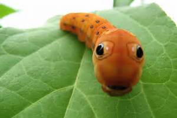

I am a catterpillar. One day I wish to be a beautiful butterfly!! But at the moment...im not so much...People wish to be me though. I mean, I dont blame them. Im so awesome! Like Dang.
I live in brox. Im currently trying to build my cacoon. Since im so special im making it out of gold!! but the recources are hard to find. it pays to be extra.
I dont like it when people touch me. Like please, how you ever seen those signs that day "dont touch the masterpeice". Im a freaking masterpeice. I like it though when water is cold. Just cuz.
In my side scroller game i made the ball bounce off the horizontal paddle. It glichted alot and it was really bad. I personally think ariella khalilis game was so much better. Shes cooler than me. AND THATS SAYING ALOT.
i learned how to write python and made atom to draw any shape i want. I made a computer do what i tell it to do in the language it speaks. that is pretty freaaking cool. i feel more and more like a coder seeing the things i type in the computer turn into commands and seeing the words turn different colors making sure that i am right the difference between python and scratch is the block coding and having to write down specifically each command and making mistakes of a period and a () in the wrong place. they teach us loops and variables in both and it makes sense they are similar in that way. it felt like i was making progress running the program and seeing where the error was. i like that feeling.